GIS mapping with R
In this webinar, we will see how to create all sorts of GIS maps with the packages sf, tmap, raster, leaflet, ggplot2, grid (part of Base R), and mapview:
- simple maps
- inset maps
- faceted maps
- animated maps
- interactive maps
- raster maps
Finally, we will learn how to add basemaps from OpenStreetMap and Google Maps.
Slides (Click and wait: this reveal.js presentation may take a little time to load.)
GIS concepts
Types of spatial data
Vector data
Vector data represent discrete objects.
They contain:
- a geometry: the shape and location of the objects,
- attributes: additional variables (e.g. name, year, type).
Common file formats include GeoJSON and shapefile.
Examples: countries, roads, rivers, towns.
Raster data
Raster data represent continuous phenomena or spatial fields.
Common file formats include TIFF, GeoTIFF, NetCDF, and Esri grid.
Examples: temperature, air quality, elevation, water depth.
Vector data
Vector data come in multiple types:
- point: single set of coordinates,
- multi-point: multiple sets of coordinates,
- polyline: multiple sets for which the order matters,
- multi-polyline: multiple of the above,
- polygon: same as polyline but first and last sets are the same,
- multi-polygon: multiple of the above.
Raster data
Grid of equally sized rectangular cells containing values for some variables.
Size of cells = resolution.
For computing efficiency, rasters do not have coordinates of each cell, but the bounding box and the number of rows and columns.
Coordinate Reference Systems (CRS)
A location on Earth’s surface can be identified by its coordinates and some reference system called CRS.
The coordinates (x, y) are called longitude and latitude.
There can be a 3rd coordinate (z) for elevation or other measurement—usually a vertical one.
And a 4th (m) for some other data attribute—usually a horizontal measurement.
In 3D, longitude and latitude are expressed in angular units (e.g. degrees) and the reference system needed is an angular CRS or geographic coordinate system (GCS).
In 2D, they are expressed in linear units (e.g. meters) and the reference system needed is a planar CRS or projected coordinate system (PCS).
Datums
Since the Earth is not a perfect sphere, we use spheroidal models to represent its surface. Those are called geodetic datums.
Some datums are global, others local (more accurate in a particular area of the globe, but only useful there).
Examples of commonly used global datums:
- WGS84 (World Geodesic System 1984),
- NAD83 (North American Datum of 1983).
Angular CRS
An angular CRS contains a datum, an angular unit and references such as a prime meridian (e.g. the Royal Observatory, Greenwich, England).
In an angular CRS or GCS:
Longitude (\(\lambda\)) represents the angle between the prime meridian and the meridian that passes through that location.
Latitude (\(\phi\)) represents the angle between the line that passes through the center of the Earth and that location and its projection on the equatorial plane.
Longitude and latitude are thus angular coordinates.
Projections
To create a two-dimensional map, you need to project this 3D angular CRS into a 2D one.
Various projections offer different characteristics. For instance:
- some respect areas (equal-area),
- some respect the shape of geographic features (conformal),
- some almost respect both for small areas.
It is important to choose one with sensible properties for your goals.
Examples of projections:
- Mercator,
- UTM,
- Robinson.
Planar CRS
A planar CRS is defined by a datum, a projection and a set of parameters such as a linear unit and the origins.
Common planar CRS have been assigned a unique ID called EPSG code which is much more convenient to use.
In a planar CRS, coordinates will not be in degrees anymore but in meters (or other length unit).
Projecting into a new CRS
You can change the projection of your data.
Vector data won’t suffer any loss of precision, but raster data will.
→ best to try to avoid reprojecting rasters: if you want to combine various datasets which have different projections, reproject vector data instead.
GIS in R
Resources
Open GIS data
Free GIS Data: list of free GIS datasets.
Books
Geocomputation with R by Robin Lovelace, Jakub Nowosad and Jannes Muenchow.
Spatial Data Science by Edzer Pebesma and Roger Bivand.
Spatial Data Science with R by Robert J. Hijmans.
Using Spatial Data with R by Claudia A. Engel.
Tutorial
An Introduction to Spatial Data Analysis and Visualisation in R by the CDRC.
Resources
Website
r-spatial by Edzer Pebesma, Marius Appel and Daniel Nüst.
CRAN package list
Mailing list
R Special Interest Group on using Geographical data and Mapping.
Packages
There is now a rich ecosystem of GIS packages in R1.
1 Bivand, R.S. Progress in the R ecosystem for representing and handling spatial data. J Geogr Syst (2020). https://doi.org/10.1007/s10109-020-00336-0.
Data manipulation
Older packages
- sp
- raster
- rgdal
- rgeos
Newer generation
Mapping
Static maps
- ggplot2 + ggspatial
- tmap
Dynamic maps
- leaflet
- ggplot2 + gganimate
- mapview
- ggmap
- tmap
sf: Simple Features in R
Geospatial vectors: points, lines, polygons.
Simple Features—defined by the Open Geospatial Consortium (OGC) and formalized by ISO—is a set of standards now used by most GIS libraries.
Well-known text (WKT) is a markup language for representing vector geometry objects according to those standards.
A compact computer version also exists—well-known binary (WKB)—used by spatial databases.
The package sp predates Simple Features.
sf—launched in 2016—implements these standards in R in the form of sf objects: data.frames (or tibbles) containing the attributes, extended by sfc objects or simple feature geometries list-columns.
sf
Some useful links:
- GitHub repo,
- Paper,
- Resources,
- Cheatsheet,
- 6 vignettes: 1, 2, 3, 4, 5, 6.
And the cheatsheet:
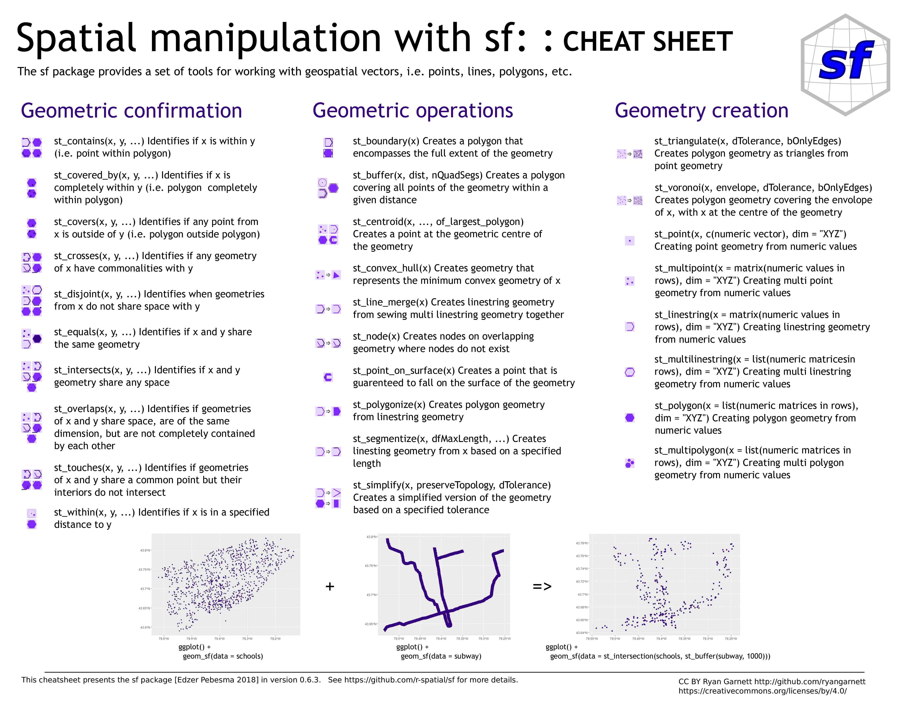xxxxx
sf objects
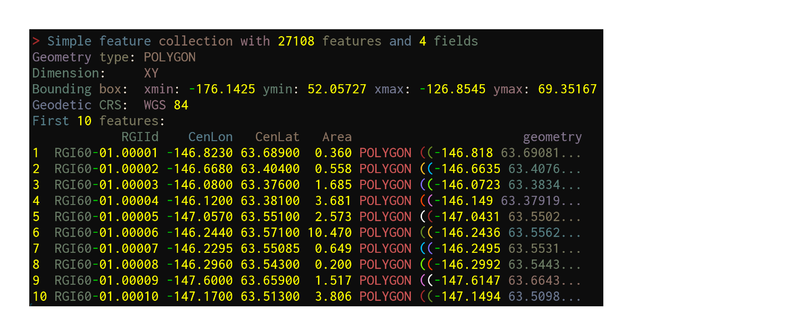
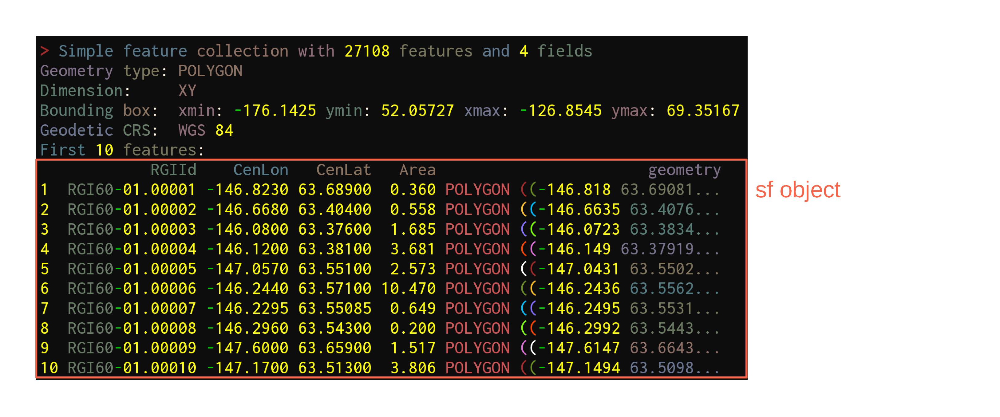
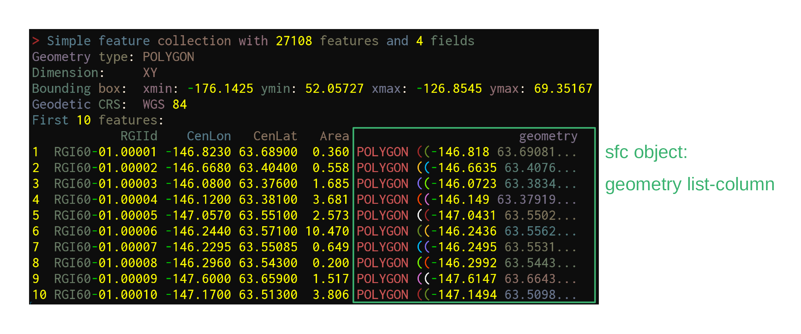
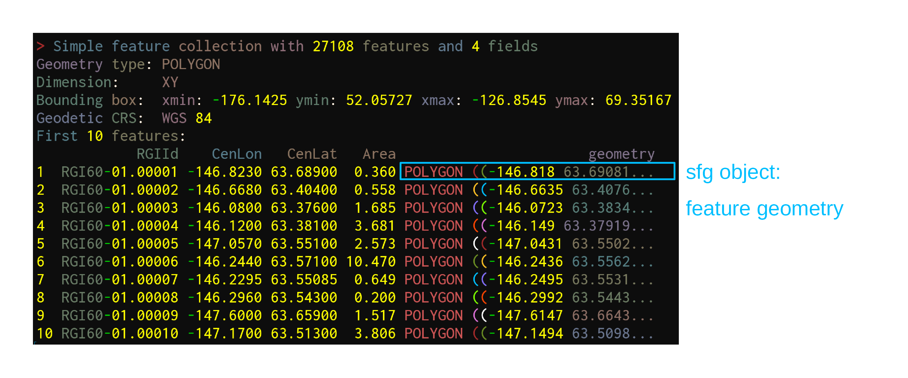
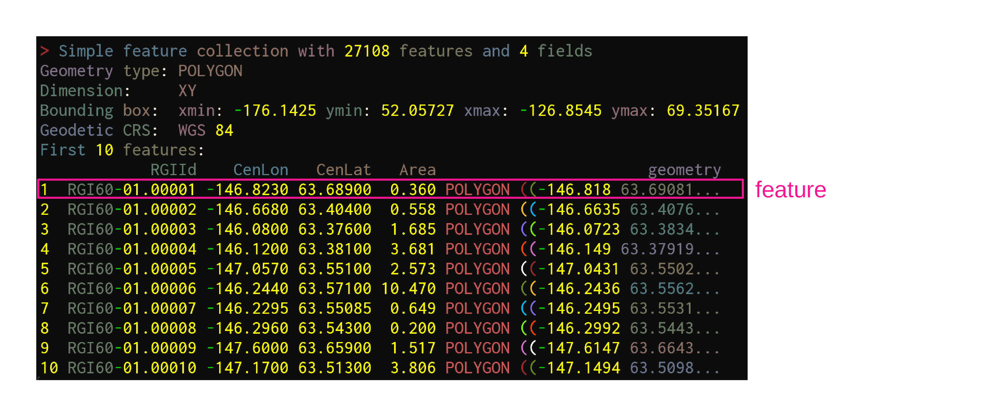
sf functions
Most functions start with st_ (which refers to “spatial type”).
terra: Geospatial rasters
Faster and simpler replacement for the raster package by the same team.
Mostly implemented in C++.
Can work with datasets too large to be loaded into memory.
terra
Some useful links:
tmap: Layered grammar of graphics GIS maps
Some useful links:
Help pages and vignettes
?tmap-element
vignette("tmap-getstarted")
# All the usual help pages, e.g.:
?tm_layouttmap functions
Main functions start with tmap_
Functions creating map elements start with tm_
tmap functioning
Very similar to ggplot2
Typically, a map contains:
- One or multiple layer(s) (the order matters as they stack on top of each other)
- Some layout (e.g. customization of title, background, margins):
tm_layout - A compass:
tm_compass - A scale bar:
tm_scale_bar
Each layer contains:
- Some data:
tm_shape - How that data will be represented: e.g.
tm_polygons,tm_lines,tm_raster
tmap example
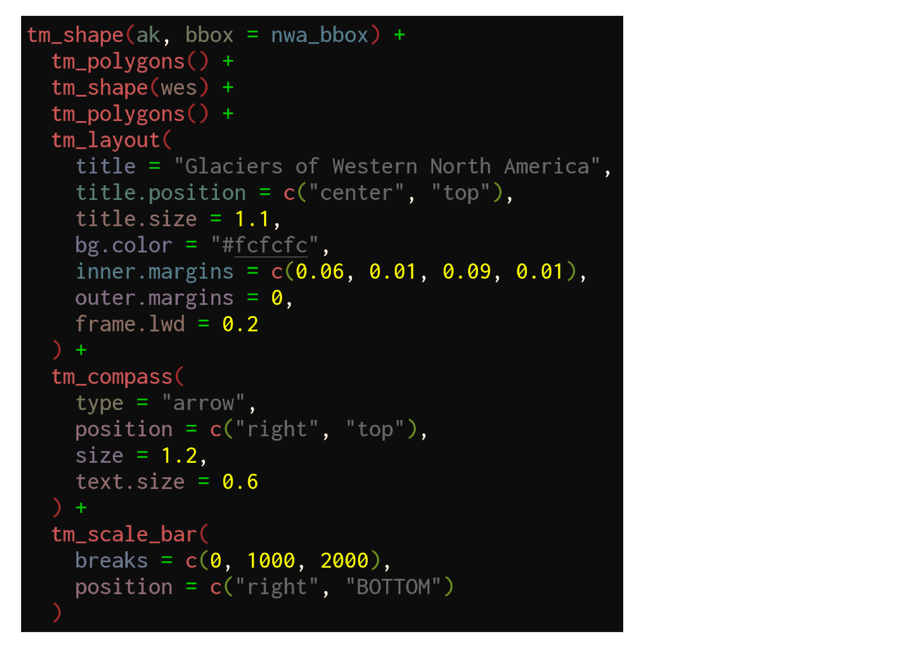
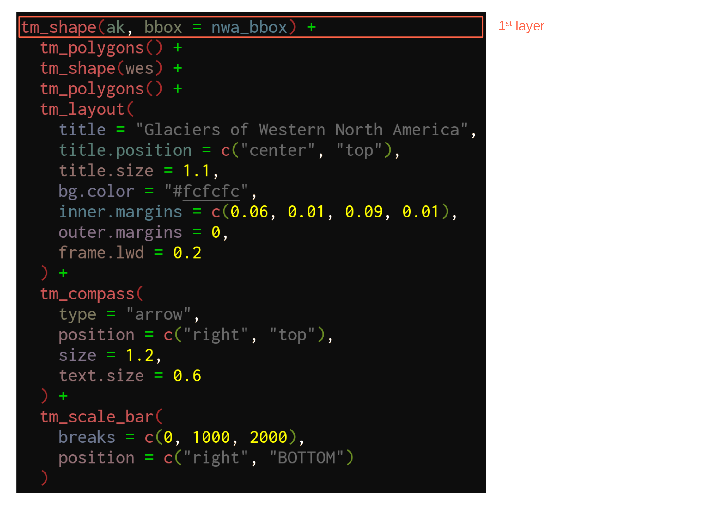
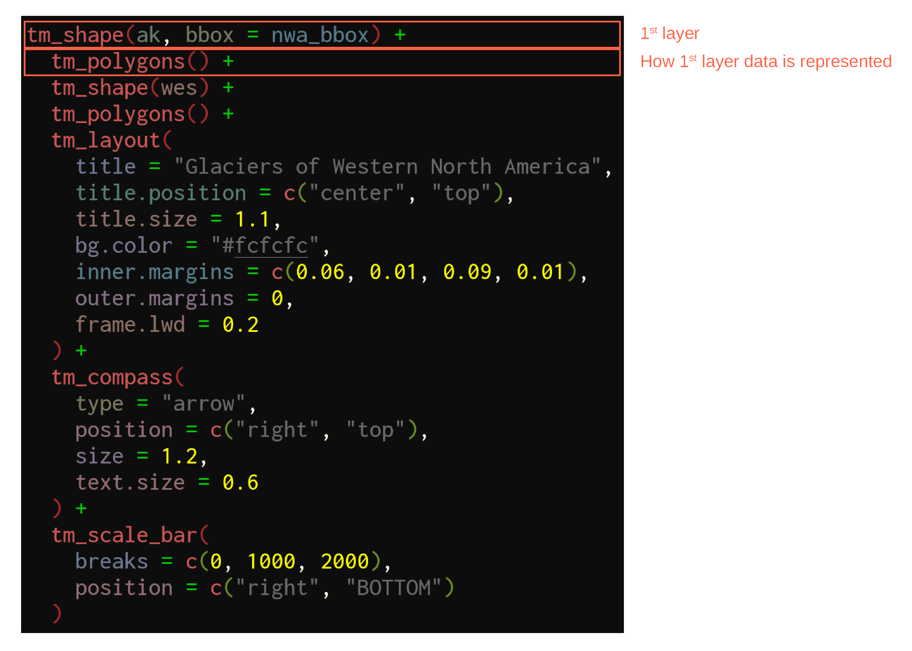
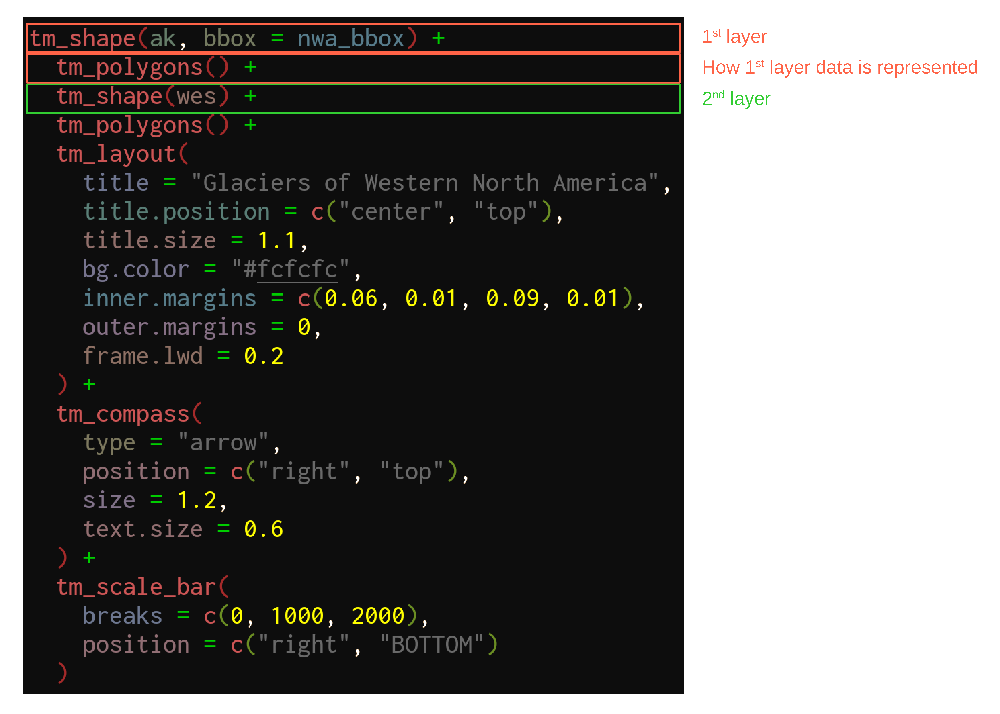
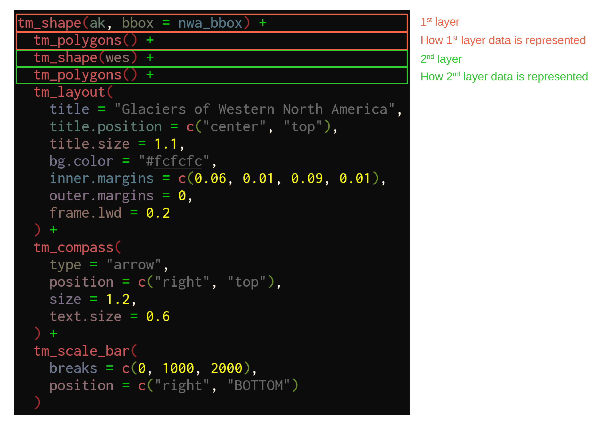
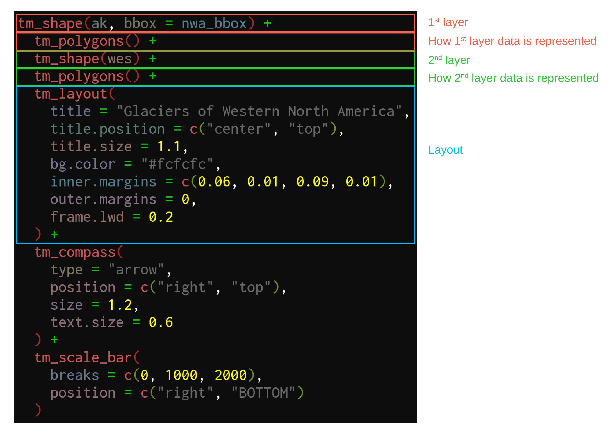
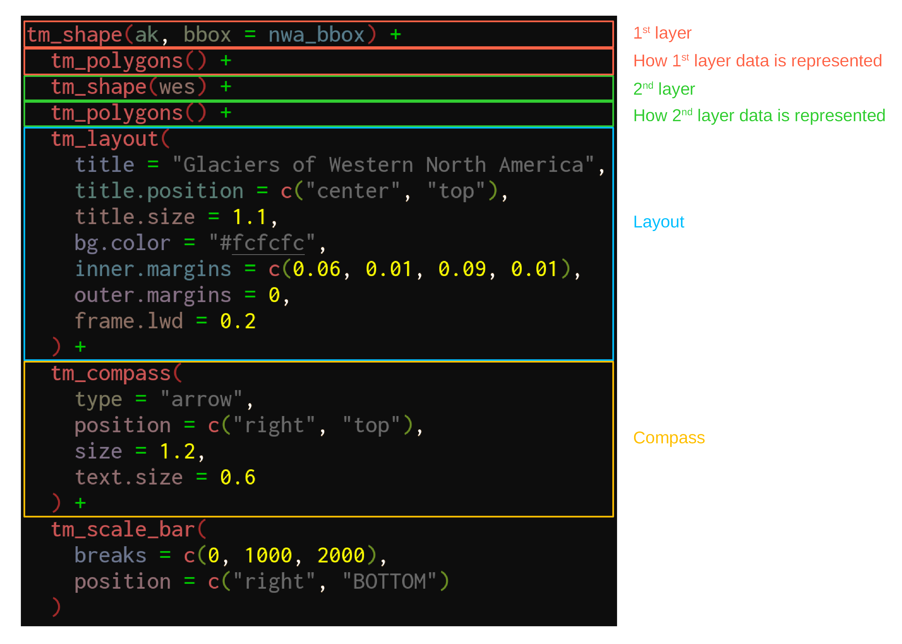
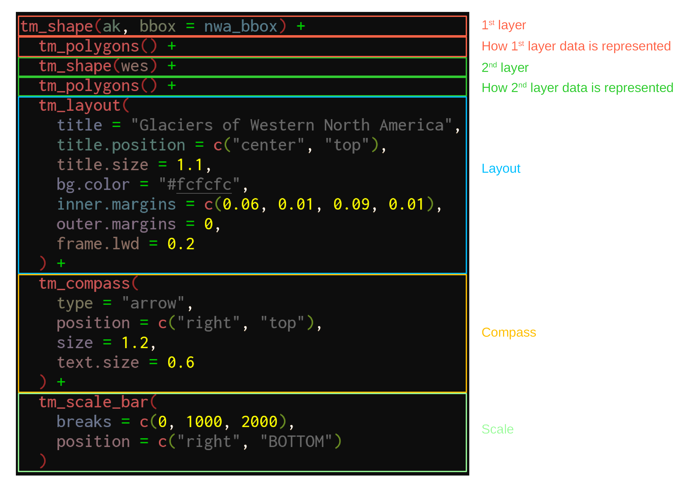
ggplot2 (the standard in R plots)
Some useful links:
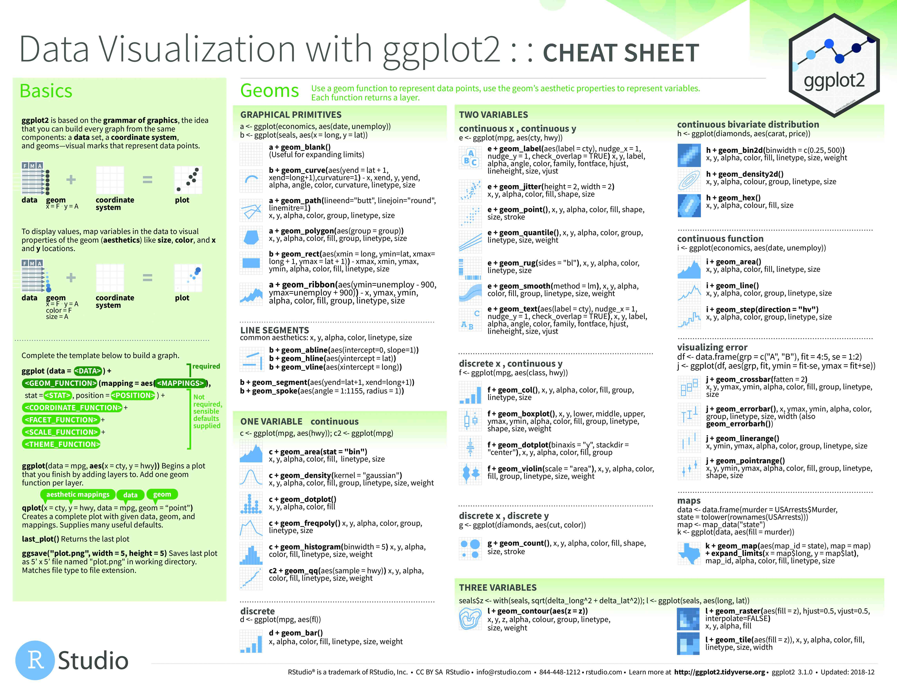
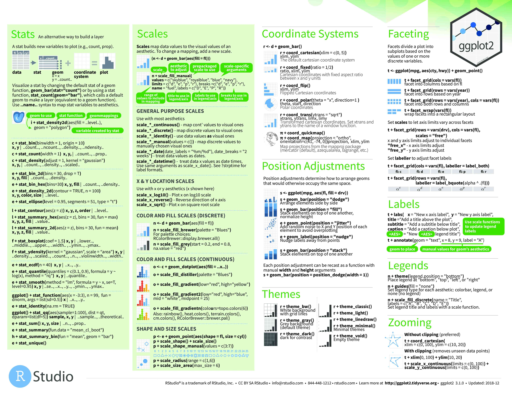
geom_sf allows to plot sf objects (i.e. make maps).
Example:
Glaciers melt in North America
Data
For this webinar, we will use:
- the Alaska as well as the Western Canada and USA subsets of the Randolph Glacier Inventory version 6.02,
- the USGS time series of the named glaciers of Glacier National Park3,
- the Alaska as well as the Western Canada and USA subsets of the consensus estimate for the ice thickness distribution of all glaciers on Earth dataset4.
2 RGI Consortium (2017). Randolph Glacier Inventory – A Dataset of Global Glacier Outlines: Version 6.0: Technical Report, Global Land Ice Measurements from Space, Colorado, USA. Digital Media. DOI: https://doi.org/10.7265/N5-RGI-60.
3 Fagre, D.B., McKeon, L.A., Dick, K.A. and Fountain, A.G., 2017, Glacier margin time series (1966, 1998, 2005, 2015) of the named glaciers of Glacier National Park, MT, USA: U.S. Geological Survey data release. DOI: https://doi.org/10.5066/F7P26WB1.
4 Farinotti, Daniel, 2019, A consensus estimate for the ice thickness distribution of all glaciers on Earth - dataset, Zurich. ETH Zurich. DOI: https://doi.org/10.3929/ethz-b-000315707.
The datasets can be downloaded as zip files from these websites
Packages
Packages need to be installed before they can be loaded in a session.
Packages on CRAN can be installed with:
install.packages("<package-name>")basemaps is not on CRAN and needs to be installed from GitHub thanks to devtools:
install.packages("devtools")
devtools::install_github("16EAGLE/basemaps")We load all the packages that we will need at the top of the script:
library(sf) # spatial vector data manipulation
library(tmap) # map production and tiled web map
library(dplyr) # non GIS specific (tabular data manipulation)
library(magrittr) # non GIS specific (pipes)
library(purrr) # non GIS specific (functional programming)
library(rnaturalearth) # basemap data access functions
library(rnaturalearthdata) # basemap data
library(mapview) # tiled web map
library(grid) # (part of base R) used to create inset map
library(ggplot2) # alternative to tmap for map production
library(ggspatial) # spatial framework for ggplot2
library(terra) # gridded spatial data manipulation
library(ggmap) # download basemap data
library(basemaps) # download basemap data
library(magick) # wrapper around ImageMagick STL
library(leaflet) # integrate Leaflet JS in RReading and preparing data
Randolph Glacier Inventory
This dataset contains the contour of all glaciers on Earth.
We will focus on glaciers in Western North America.
You can download and unzip 02_rgi60_WesternCanadaUS and 01_rgi60_Alaska from the Randolph Glacier Inventory version 6.0.
Reading in data
Data get imported and turned into sf objects with the function sf::st_read:
ak <- st_read("data/01_rgi60_Alaska")Make sure to use the absolute paths or the paths relative to your working directory (which can be obtained with getwd).
ak <- st_read("data/01_rgi60_Alaska")Reading layer `01_rgi60_Alaska' from data source `./data/01_rgi60_Alaska'
using driver `ESRI Shapefile'
Simple feature collection with 27108 features and 22 fields
Geometry type: POLYGON
Dimension: XY
Bounding box: xmin: -176.1425 ymin: 52.05727 xmax: -126.8545 ymax: 69.35167
Geodetic CRS: WGS 84Your turn:
Read in the data for the rest of north western America (from 02_rgi60_WesternCanadaUS) and create an sf object called wes.
First look at the data
akSimple feature collection with 27108 features and 22 fields
Geometry type: POLYGON
Dimension: XY
Bounding box: xmin: -176.1425 ymin: 52.05727 xmax: -126.8545 ymax: 69.35167
Geodetic CRS: WGS 84
First 10 features:
RGIId GLIMSId BgnDate EndDate CenLon CenLat O1Region
1 RGI60-01.00001 G213177E63689N 20090703 -9999999 -146.8230 63.68900 1
2 RGI60-01.00002 G213332E63404N 20090703 -9999999 -146.6680 63.40400 1
3 RGI60-01.00003 G213920E63376N 20090703 -9999999 -146.0800 63.37600 1
4 RGI60-01.00004 G213880E63381N 20090703 -9999999 -146.1200 63.38100 1
5 RGI60-01.00005 G212943E63551N 20090703 -9999999 -147.0570 63.55100 1
6 RGI60-01.00006 G213756E63571N 20090703 -9999999 -146.2440 63.57100 1
7 RGI60-01.00007 G213771E63551N 20090703 -9999999 -146.2295 63.55085 1
8 RGI60-01.00008 G213704E63543N 20090703 -9999999 -146.2960 63.54300 1
9 RGI60-01.00009 G212400E63659N 20090703 -9999999 -147.6000 63.65900 1
10 RGI60-01.00010 G212830E63513N 20090703 -9999999 -147.1700 63.51300 1
O2Region Area Zmin Zmax Zmed Slope Aspect Lmax Status Connect Form
1 2 0.360 1936 2725 2385 42 346 839 0 0 0
2 2 0.558 1713 2144 2005 16 162 1197 0 0 0
3 2 1.685 1609 2182 1868 18 175 2106 0 0 0
4 2 3.681 1273 2317 1944 19 195 4175 0 0 0
5 2 2.573 1494 2317 1914 16 181 2981 0 0 0
6 2 10.470 1201 3547 1740 22 33 10518 0 0 0
7 2 0.649 1918 2811 2194 23 151 1818 0 0 0
8 2 0.200 2826 3555 3195 45 80 613 0 0 0
9 2 1.517 1750 2514 1977 18 274 2255 0 0 0
10 2 3.806 1280 1998 1666 17 35 3332 0 0 0
TermType Surging Linkages Name geometry
1 0 9 9 <NA> POLYGON ((-146.818 63.69081...
2 0 9 9 <NA> POLYGON ((-146.6635 63.4076...
3 0 9 9 <NA> POLYGON ((-146.0723 63.3834...
4 0 9 9 <NA> POLYGON ((-146.149 63.37919...
5 0 9 9 <NA> POLYGON ((-147.0431 63.5502...
6 0 9 9 <NA> POLYGON ((-146.2436 63.5562...
7 0 9 9 <NA> POLYGON ((-146.2495 63.5531...
8 0 9 9 <NA> POLYGON ((-146.2992 63.5443...
9 0 9 9 <NA> POLYGON ((-147.6147 63.6643...
10 0 9 9 <NA> POLYGON ((-147.1494 63.5098...Structure of the data
str(ak)Classes ‘sf’ and 'data.frame': 27108 obs. of 23 variables:
$ RGIId : chr "RGI60-01.00001" "RGI60-01.00002" "RGI60-01.00003" ...
$ GLIMSId : chr "G213177E63689N" "G213332E63404N" "G213920E63376N" ...
$ BgnDate : chr "20090703" "20090703" "20090703" "20090703" ...
$ EndDate : chr "-9999999" "-9999999" "-9999999" "-9999999" ...
$ CenLon : num -147 -147 -146 -146 -147 ...
$ CenLat : num 63.7 63.4 63.4 63.4 63.6 ...
$ O1Region: chr "1" "1" "1" "1" ...
$ O2Region: chr "2" "2" "2" "2" ...
$ Area : num 0.36 0.558 1.685 3.681 2.573 ...
$ Zmin : int 1936 1713 1609 1273 1494 1201 1918 2826 1750 1280 ...
$ Zmax : int 2725 2144 2182 2317 2317 3547 2811 3555 2514 1998 ...
$ Zmed : int 2385 2005 1868 1944 1914 1740 2194 3195 1977 1666 ...
$ Slope : num 42 16 18 19 16 22 23 45 18 17 ...
$ Aspect : int 346 162 175 195 181 33 151 80 274 35 ...
$ Lmax : int 839 1197 2106 4175 2981 10518 1818 613 2255 3332 ...
$ Status : int 0 0 0 0 0 0 0 0 0 0 ...
$ Connect : int 0 0 0 0 0 0 0 0 0 0 ...
$ Form : int 0 0 0 0 0 0 0 0 0 0 ...
$ TermType: int 0 0 0 0 0 0 0 0 0 0 ...
$ Surging : int 9 9 9 9 9 9 9 9 9 9 ...
$ Linkages: int 9 9 9 9 9 9 9 9 9 9 ...
$ Name : chr NA NA NA NA ...
$ geometry:sfc_POLYGON of length 27108; first list element: List of 1
..$ : num [1:65, 1:2] -147 -147 -147 -147 -147 ...
..- attr(*, "class")= chr [1:3] "XY" "POLYGON" "sfg"
- attr(*, "sf_column")= chr "geometry"
- attr(*, "agr")= Factor w/ 3 levels "constant","aggregate",..: NA NA NA ...
..- attr(*, "names")= chr [1:22] "RGIId" "GLIMSId" "BgnDate" "EndDate" ...Inspect your data
Your turn:
Inspect the wes object you created.
Glacier National Park dataset
This dataset contains a time series of the retreat of 39 glaciers of Glacier National Park, MT, USA for the years 1966, 1998, 2005 and 2015.
You can download and unzip the 4 sets of files from the USGS website.
Read in and clean datasets
Create a function that reads and cleans the data:
prep <- function(dir) {
g <- st_read(dir)
g %<>% rename_with(~ tolower(gsub("Area....", "area", .x)))
g %<>% dplyr::select(
year,
objectid,
glacname,
area,
shape_leng,
x_coord,
y_coord,
source_sca,
source
)
}Create a vector of dataset names:
dirs <- grep("data/GNPglaciers_.*", list.dirs(), value = T)Pass each element of that vector through prep() thanks to map():
gnp <- map(dirs, prep)We use dplyr::select because terra also has a select function.
Combine datasets into one sf object
Check that the CRS are all the same:
all(sapply(
list(st_crs(gnp[[1]]),
st_crs(gnp[[2]]),
st_crs(gnp[[3]]),
st_crs(gnp[[4]])),
function(x) x == st_crs(gnp[[1]])
))[1] TRUEWe can rbind the elements of our list:
gnp <- do.call("rbind", gnp)You can inspect your new sf object by calling it or with str.
Estimate for ice thickness
This dataset contains an estimate for the ice thickness of all glaciers on Earth.
The nomenclature follows the Randolph Glacier Inventory.
Ice thickness being a spatial field, this is raster data.
We will use data in RGI60-02.16664_thickness.tif from the ETH Zürich Research Collection which corresponds to one of the glaciers (Agassiz) of Glacier National Park.
Load raster data
Read in data and create a SpatRaster object:
ras <- rast("data/RGI60-02/RGI60-02.16664_thickness.tif")Inspect our SpatRaster object
rasclass : SpatRaster
dimensions : 93, 74, 1 (nrow, ncol, nlyr)
resolution : 25, 25 (x, y)
extent : 707362.5, 709212.5, 5422962, 5425288 (xmin, xmax, ymin, ymax)
coord. ref. : +proj=utm +zone=11 +datum=WGS84 +units=m +no_defs
source : RGI60-02.16664_thickness.tif
name : RGI60-02.16664_thickness nlyr gives us the number of bands (a single one here). You can also run str(ras).
Our data
We now have 3 sf objects and 1 SpatRaster object:
ak: contour of glaciers in AK,wes: contour of glaciers in the rest of Western North America,gnp: time series of 39 glaciers in Glacier National Park, MT, USA,ras: ice thickness of the Agassiz Glacier from Glacier National Park.
Making maps
Let’s map our sf object ak
At a bare minimum, we need tm_shape with the data and some info as to how to represent that data:
tm_shape(ak) +
tm_polygons()
We need to label and customize it
tm_shape(ak) +
tm_polygons() +
tm_layout(
title = "Glaciers of Alaska",
title.position = c("center", "top"),
title.size = 1.1,
bg.color = "#fcfcfc",
inner.margins = c(0.06, 0.01, 0.09, 0.01),
outer.margins = 0,
frame.lwd = 0.2
) +
tm_compass(
type = "arrow",
position = c("right", "top"),
size = 1.2,
text.size = 0.6
) +
tm_scale_bar(
breaks = c(0, 500, 1000),
position = c("right", "BOTTOM")
)
Make a map of the wes object
Your turn:
Make a map with the wes object you created with the data for Western North America excluding AK.

Now, let’s make a map with ak and wes
The Coordinate Reference Systems (CRS) must be the same.
sf has a function to retrieve the CRS of an sf object: st_crs.
st_crs(ak) == st_crs(wes)[1] TRUESo we’re good (we will see later what to do if this is not the case).
Our combined map
Let’s start again with a minimum map without any layout to test things out:
tm_shape(ak) +
tm_polygons() +
tm_shape(wes) +
tm_polygons()
Uh … oh …
What went wrong?
Maps are bound by “bounding boxes”. In tmap, they are called bbox.
tmap sets the bbox the first time tm_shape is called. In our case, the bbox was thus set to the bbox of the ak object.
We need to create a new bbox for our new map.
Retrieving bounding boxes
sf has a function to retrieve the bbox of an sf object: st_bbox
The bbox of ak is:
st_bbox(ak)xmin ymin xmax ymax
-176.14247 52.05727 -126.85450 69.35167Combining bounding boxes
bbox objects can’t be combined directly.
Here is how we can create a new bbox encompassing both of our bboxes:
- first, we transform our bboxes to sfc objects with
st_as_sfc, - then we combine those objects into a new sfc object with
st_union, - finally, we retrieve the bbox of that object with
st_bbox:
nwa_bbox <- st_bbox(
st_union(
st_as_sfc(st_bbox(wes)),
st_as_sfc(st_bbox(ak))
)
)Back to our map
We can now use our new bounding box for the map of Western North America:
tm_shape(ak, bbox = nwa_bbox) +
tm_polygons() +
tm_shape(wes) +
tm_polygons() +
tm_layout(
title = "Glaciers of Western North America",
title.position = c("center", "top"),
title.size = 1.1,
bg.color = "#fcfcfc",
inner.margins = c(0.06, 0.01, 0.09, 0.01),
outer.margins = 0,
frame.lwd = 0.2
) +
tm_compass(
type = "arrow",
position = c("right", "top"),
size = 1.2,
text.size = 0.6
) +
tm_scale_bar(
breaks = c(0, 1000, 2000),
position = c("right", "BOTTOM")
)
Let’s add a basemap
We will use data from Natural Earth, a public domain map dataset.
There are much more fancy options, but they usually involve creating accounts (e.g. with Google) to access some API.
In addition, this dataset can be accessed direction from within R thanks to the rOpenSci packages:
rnaturalearth: provides the functions,rnaturalearthdata: provides the data.
Create an sf object with states/provinces
states_all <- ne_states(
country = c("canada", "united states of america"),
returnclass = "sf"
)ne_ stands for “Natural Earth”.
Select relevant states/provinces
states <- states_all %>%
filter(name_en == "Alaska" |
name_en == "British Columbia" |
name_en == "Yukon" |
name_en == "Northwest Territories" |
name_en == "Alberta" |
name_en == "California" |
name_en == "Washington" |
name_en == "Oregon" |
name_en == "Idaho" |
name_en == "Montana" |
name_en == "Wyoming" |
name_en == "Colorado" |
name_en == "Nevada" |
name_en == "Utah"
)Add the basemap to our map
What do we need to make sure of first?
st_crs(states) == st_crs(ak)[1] TRUEWe add the basemap as a 3rd layer.
Mind the order! If you put the basemap last, it will cover your data.
Of course, we will use our nwa_bbox bounding box again.
We will also break tm_polygons into tm_borders and tm_fill for ak and wes in order to colourise them with slightly different colours:
tm_shape(states, bbox = nwa_bbox) +
tm_polygons(col = "#f2f2f2", lwd = 0.2) +
tm_shape(ak) +
tm_borders(col = "#3399ff") +
tm_fill(col = "#86baff") +
tm_shape(wes) +
tm_borders(col = "#3399ff") +
tm_fill(col = "#86baff") +
tm_layout(
title = "Glaciers of Western North America",
title.position = c("center", "top"),
title.size = 1.1,
bg.color = "#fcfcfc",
inner.margins = c(0.06, 0.01, 0.09, 0.01),
outer.margins = 0,
frame.lwd = 0.2
) +
tm_compass(
type = "arrow",
position = c("right", "top"),
size = 1.2,
text.size = 0.6
) +
tm_scale_bar(
breaks = c(0, 1000, 2000),
position = c("right", "BOTTOM")
)
tmap styles
tmap has a number of styles that you can try.
For instance, to set the style to “classic”, run the following before making your map:
tmap_style("classic")Other options are:
“white” (default), “gray”, “natural”, “cobalt”, “col_blind”, “albatross”, “beaver”, “bw”, and “watercolor”.

To return to the default, you need to run:
tmap_style("white")or:
tmap_options_reset()which will reset every tmap option.
Inset maps
Now, how can we combine this with our gnp object?
We could add it as an inset of our Western North America map.
First, let’s map it
Let’s use the same tm_borders and tm_fill we just used:
tm_shape(gnp) +
tm_borders(col = "#3399ff") +
tm_fill(col = "#86baff") +
tm_layout(
title = "Glaciers of Glacier National Park",
title.position = c("center", "top"),
legend.title.color = "#fcfcfc",
legend.text.size = 1,
bg.color = "#fcfcfc",
inner.margins = c(0.07, 0.03, 0.07, 0.03),
outer.margins = 0
) +
tm_compass(
type = "arrow",
position = c("right", "top"),
text.size = 0.7
) +
tm_scale_bar(
breaks = c(0, 10, 20),
position = c("right", "BOTTOM"),
text.size = 1
)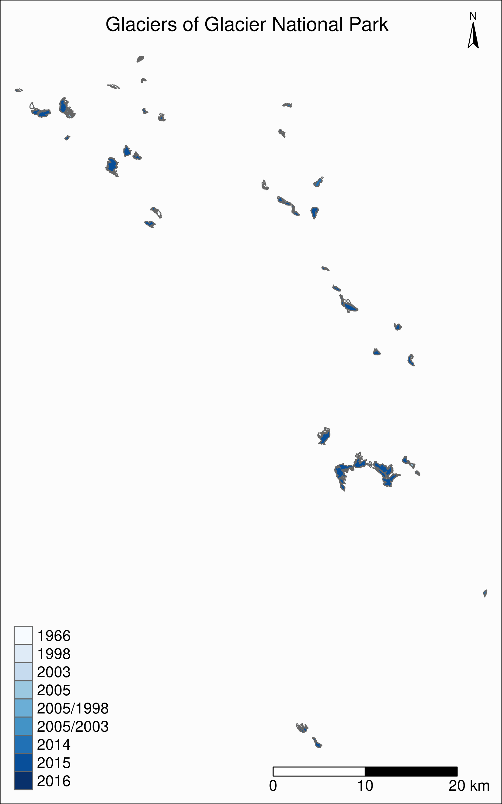
Create an inset map
As always, first we check that the CRS are the same:
st_crs(gnp) == st_crs(ak)[1] FALSEAH!
CRS transformation
We need to reproject gnp into the CRS of our other sf objects (e.g. ak):
gnp <- st_transform(gnp, st_crs(ak))We can verify that the CRS are now the same:
st_crs(gnp) == st_crs(ak)[1] TRUEInset maps: first step
Add a rectangle showing the location of the GNP map in the main North America map.
We need to create a new sfc object from the gnp bbox so that we can add it to our previous map as a new layer:
gnp_zone <- st_bbox(gnp) %>%
st_as_sfc()Inset maps: second step
Create a tmap object of the main map. Of course, we need to edit the title. Also, note the presence of our new layer:
main_map <- tm_shape(states, bbox = nwa_bbox) +
tm_polygons(col = "#f2f2f2", lwd = 0.2) +
tm_shape(ak) +
tm_borders(col = "#3399ff") +
tm_fill(col = "#86baff") +
tm_shape(wes) +
tm_borders(col = "#3399ff") +
tm_fill(col = "#86baff") +
tm_shape(gnp_zone) +
tm_borders(lwd = 1.5, col = "#ff9900") +
tm_layout(
title = "Glaciers of Glacier National Park",
title.position = c("center", "top"),
title.size = 1.1,
bg.color = "#fcfcfc",
inner.margins = c(0.06, 0.01, 0.09, 0.01),
outer.margins = 0,
frame.lwd = 0.2
) +
tm_compass(
type = "arrow",
position = c("right", "top"),
size = 1.2,
text.size = 0.6
) +
tm_scale_bar(
breaks = c(0, 500, 1000),
position = c("right", "BOTTOM")
)Inset maps: third step
Create a tmap object of the inset map.
We make sure to matching colours and edit the layouts for better readability:
inset_map <- tm_shape(gnp) +
tm_borders(col = "#3399ff") +
tm_fill(col = "#86baff") +
tm_layout(
legend.show = F,
bg.color = "#fcfcfc",
inner.margins = c(0.03, 0.03, 0.03, 0.03),
outer.margins = 0,
frame = "#ff9900",
frame.lwd = 3
)Inset maps: final step
Combine the two tmap objects.
We print the main map and add the inset map with grid::viewport:
main_map
print(inset_map, vp = viewport(0.41, 0.26, width = 0.5, height = 0.5))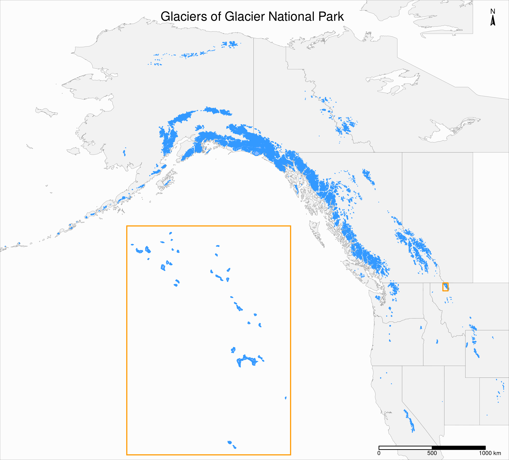
Mapping a subset of the data
To see the retreat of the ice, we need to zoom in.
Let’s focus on a single glacier: Agassiz Glacier.
Map of the Agassiz Glacier
Select the data points corresponding to the Agassiz Glacier:
ag <- gnp %>% filter(glacname == "Agassiz Glacier")tm_shape(ag) +
tm_polygons() +
tm_layout(
title = "Agassiz Glacier",
title.position = c("center", "top"),
legend.position = c("left", "bottom"),
legend.title.color = "#fcfcfc",
legend.text.size = 1,
bg.color = "#fcfcfc",
inner.margins = c(0.07, 0.03, 0.07, 0.03),
outer.margins = 0
) +
tm_compass(
type = "arrow",
position = c("right", "top"),
text.size = 0.7
) +
tm_scale_bar(
breaks = c(0, 0.5, 1),
position = c("right", "BOTTOM"),
text.size = 1
)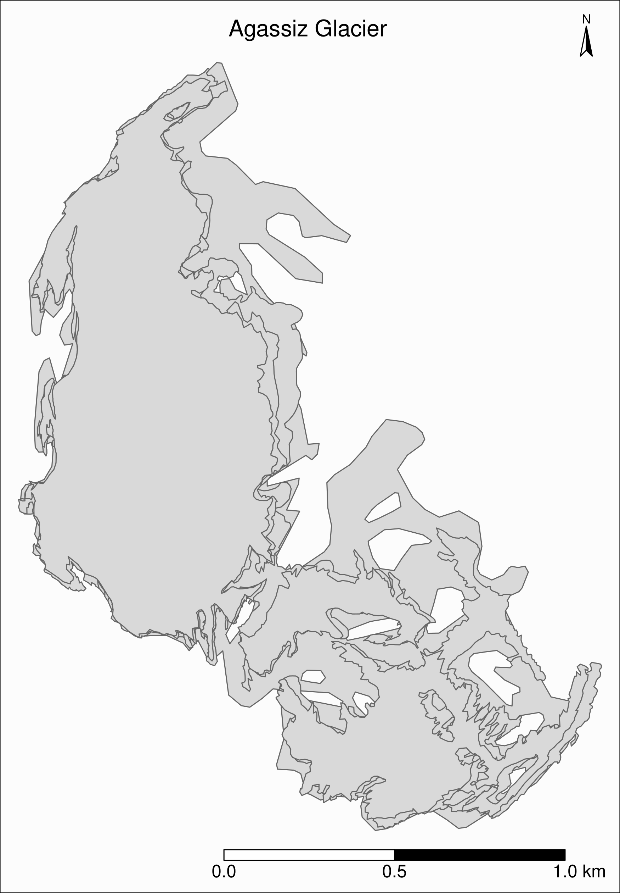
Not great …
Map based on attribute variables
tm_shape(ag) +
tm_polygons("year", palette = "Blues") +
tm_layout(
title = "Agassiz Glacier",
title.position = c("center", "top"),
legend.position = c("left", "bottom"),
legend.title.color = "#fcfcfc",
legend.text.size = 1,
bg.color = "#fcfcfc",
inner.margins = c(0.07, 0.03, 0.07, 0.03),
outer.margins = 0
) +
tm_compass(
type = "arrow",
position = c("right", "top"),
text.size = 0.7
) +
tm_scale_bar(
breaks = c(0, 0.5, 1),
position = c("right", "BOTTOM"),
text.size = 1
)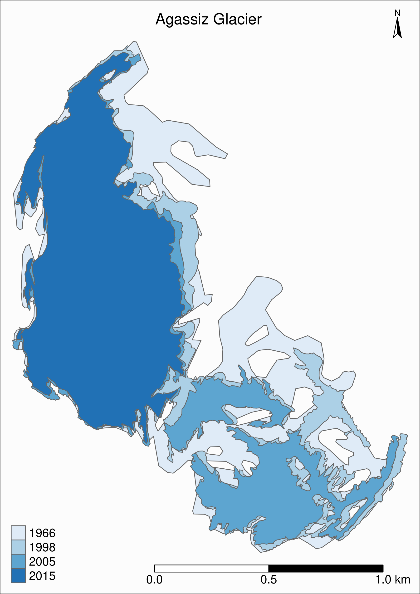
Using ggplot2 instead of tmap
As an alternative to tmap, ggplot2 can plot maps with the geom_sf function:
ggplot(ag) +
geom_sf(aes(fill = year)) +
scale_fill_brewer(palette = "Blues") +
labs(title = "Agassiz Glacier") +
annotation_scale(location = "bl", width_hint = 0.4) +
annotation_north_arrow(location = "tr", which_north = "true",
pad_x = unit(0.75, "in"), pad_y = unit(0.5, "in"),
style = north_arrow_fancy_orienteering) +
theme_bw() +
theme(plot.title = element_text(hjust = 0.5))The package ggspatial adds a lot of functionality to ggplot2 for spatial data.
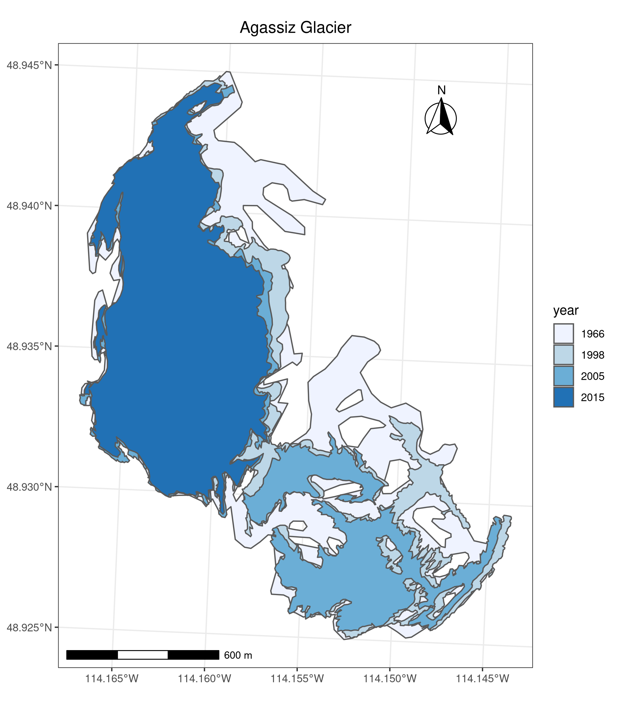
Faceted maps
Faceted map of the retreat of Agassiz
tm_shape(ag) +
tm_polygons(col = "#86baff") +
tm_layout(
main.title = "Agassiz Glacier",
main.title.position = c("center", "top"),
main.title.size = 1.2,
legend.position = c("left", "bottom"),
legend.title.color = "#fcfcfc",
legend.text.size = 1,
bg.color = "#fcfcfc",
inner.margins = c(0, 0.03, 0, 0.03),
outer.margins = 0,
panel.label.bg.color = "#fcfcfc",
frame = F,
asp = 0.6
) +
tm_compass(
type = "arrow",
position = c("right", "top"),
size = 1,
text.size = 0.6
) +
tm_scale_bar(
breaks = c(0, 0.5, 1),
position = c("right", "BOTTOM"),
text.size = 0.6
) +
tm_facets(
by = "year",
free.coords = F,
ncol = 4
)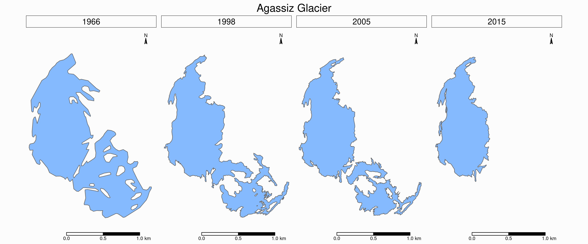
Animated maps
Animated map of the Retreat of Agassiz
First, we need to create a tmap object with facets:
agassiz_anim <- tm_shape(ag) +
tm_polygons(col = "#86baff") +
tm_layout(
title = "Agassiz Glacier",
title.position = c("center", "top"),
legend.position = c("left", "bottom"),
legend.title.color = "#fcfcfc",
legend.text.size = 1,
bg.color = "#fcfcfc",
inner.margins = c(0.08, 0, 0.08, 0),
outer.margins = 0,
panel.label.bg.color = "#fcfcfc"
) +
tm_compass(
type = "arrow",
position = c("right", "top"),
text.size = 0.7
) +
tm_scale_bar(
breaks = c(0, 0.5, 1),
position = c("right", "BOTTOM"),
text.size = 1
) +
tm_facets(
along = "year",
free.coords = F
)Then we can pass that object to tmap_animation:
tmap_animation(
agassiz_anim,
filename = "ag.gif",
dpi = 300,
inner.margins = c(0.08, 0, 0.08, 0),
delay = 100
)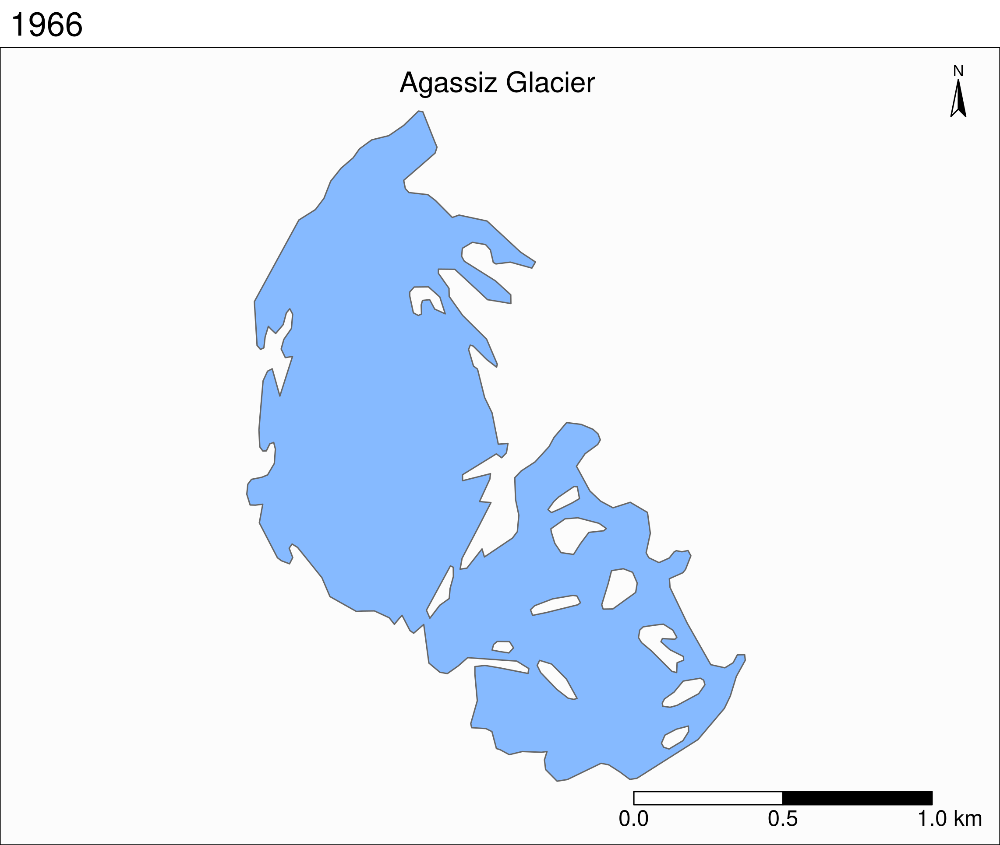
Map of ice thickness of Agassiz
Now, let’s map the estimated ice thickness on Agassiz Glacier.
This time, we use tm_raster:
tm_shape(ras) +
tm_raster(title = "") +
tm_layout(
title = "Ice thickness (m) of Agassiz Glacier",
title.position = c("center", "top"),
legend.position = c("left", "bottom"),
legend.bg.color = "#ffffff",
legend.text.size = 1,
bg.color = "#fcfcfc",
inner.margins = c(0.07, 0.03, 0.07, 0.03),
outer.margins = 0
) +
tm_compass(
type = "arrow",
position = c("right", "top"),
text.size = 0.7
) +
tm_scale_bar(
breaks = c(0, 0.5, 1),
position = c("right", "BOTTOM"),
text.size = 1
)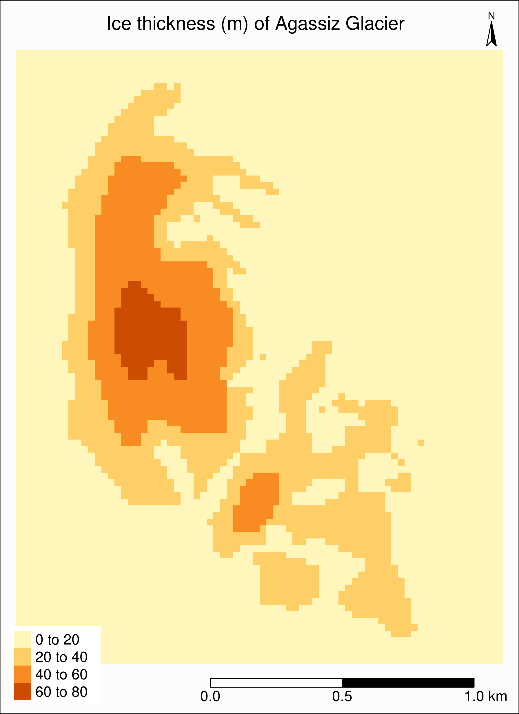
Combining with Randolph data
As always, we check whether the CRS are the same:
st_crs(ag) == st_crs(ras)[1] FALSEWe need to reproject ag (remember that it is best to avoid reprojecting raster data):
ag %<>% st_transform(st_crs(ras))The retreat and ice thickness layers will hide each other (the order matters!). One option is to use tm_borders for one of them, but we can also use transparency (alpha). We also adjust the legend:
tm_shape(ras) +
tm_raster(title = "Ice (m)") +
tm_shape(ag) +
tm_polygons("year", palette = "Blues", alpha = 0.2, title = "Contour") +
tm_layout(
title = "Ice thickness (m) and retreat of Agassiz Glacier",
title.position = c("center", "top"),
legend.position = c("left", "bottom"),
legend.bg.color = "#ffffff",
legend.text.size = 0.7,
bg.color = "#fcfcfc",
inner.margins = c(0.07, 0.03, 0.07, 0.03),
outer.margins = 0
) +
tm_compass(
type = "arrow",
position = c("right", "top"),
text.size = 0.7
) +
tm_scale_bar(
breaks = c(0, 0.5, 1),
position = c("right", "BOTTOM"),
text.size = 1
)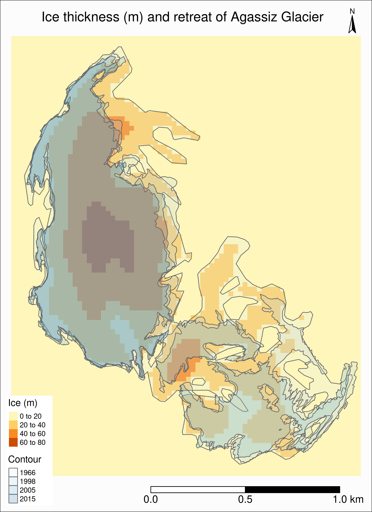
Refining raster maps
Let’s go back to our ice thickness map:
We can change the palette to blue with tm_raster(palette = "Blues"):
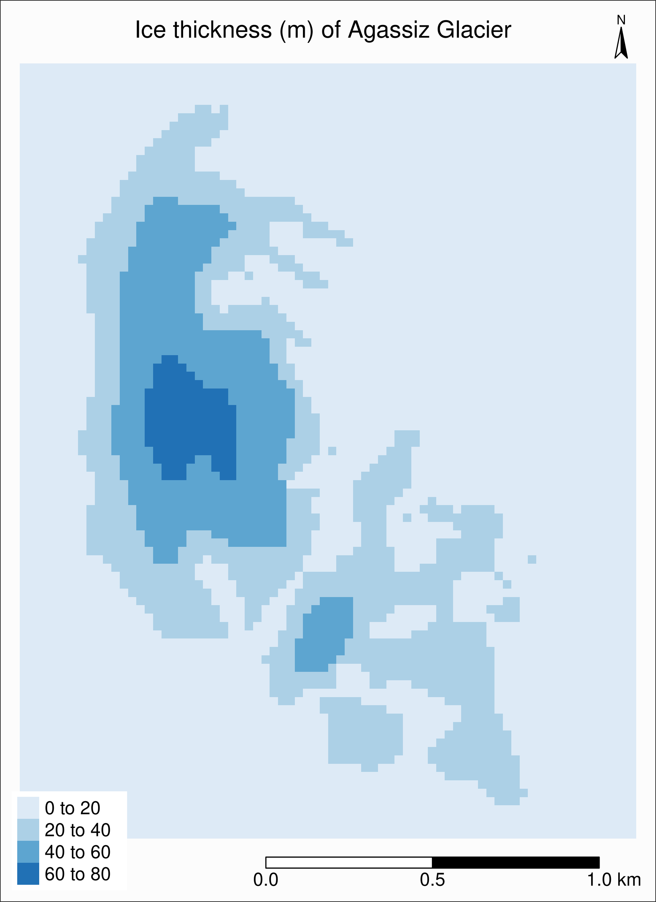
We can create a more suitable interval scale
First, let’s see what the maximum value is:
global(ras, "max")max
RGI60-02.16664_thickness 70.10873Then we can set the breaks with tm_raster(breaks = seq(0, 80, 5))
We also need to tweak the layout, legend, etc.:
tm_shape(ras) +
tm_raster(title = "", palette = "Blues", breaks = seq(0, 80, 5)) +
tm_layout(
title = "Ice thickness (m) of Agassiz Glacier",
title.position = c("center", "top"),
legend.position = c("left", "bottom"),
legend.bg.color = "#ffffff",
legend.text.size = 0.7,
bg.color = "#fcfcfc",
inner.margins = c(0.07, 0.03, 0.07, 0.03),
outer.margins = 0
) +
tm_compass(
type = "arrow",
position = c("right", "top"),
text.size = 0.7
) +
tm_scale_bar(
breaks = c(0, 0.5, 1),
position = c("right", "BOTTOM"),
text.size = 1
)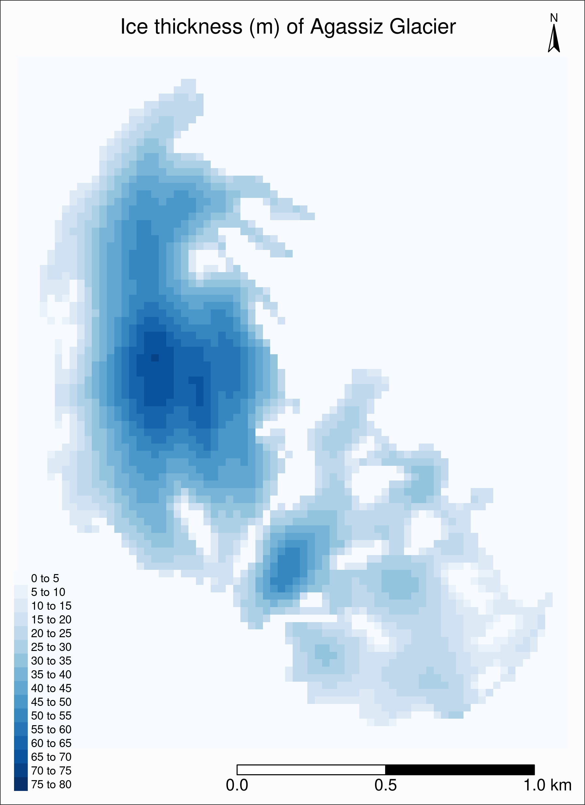
Or we can use a continuous colour scheme with tm_raster(style = "cont"):
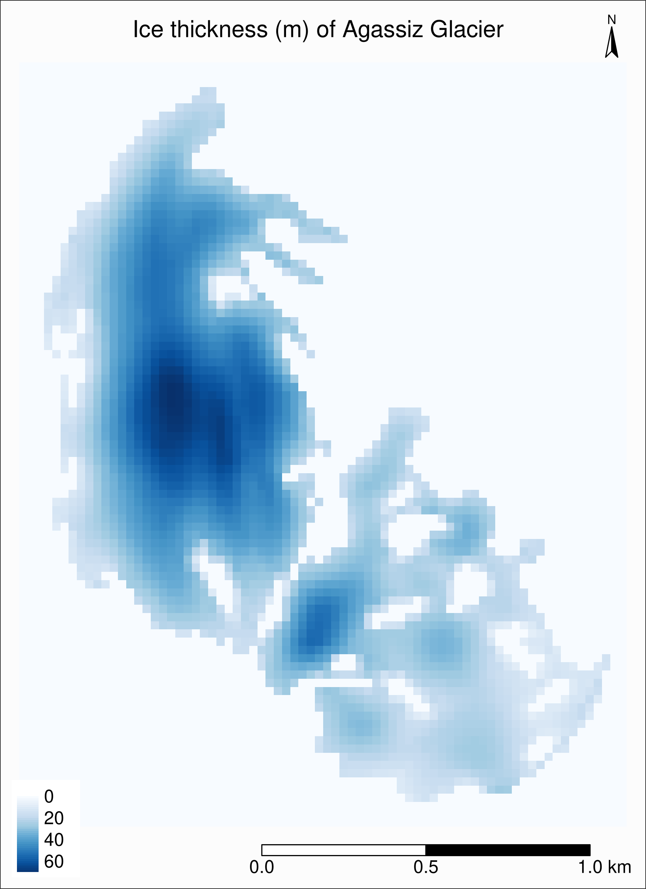
Basemaps
Basemap with ggmap
basemap <- get_map(
bbox = c(
left = st_bbox(ag)[1],
bottom = st_bbox(ag)[2],
right = st_bbox(ag)[3],
top = st_bbox(ag)[4]
),
source = "osm"
)ggmap is a powerful package, but Google now requires an API key obtained through registration
Basemap with basemaps
The package basemaps allows to download open source basemap data from several sources, but those cannot easily be combined with sf objects
This plots a satellite image of the Agassiz Glacier:
basemap_plot(ag, map_service = "esri", map_type = "world_imagery")Satellite image of the Agassiz Glacier
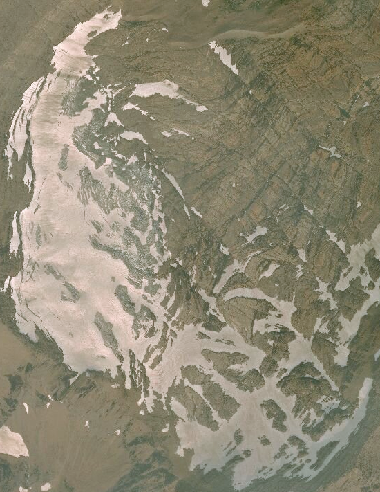
Tiled web maps with Leaflet JS
mapview
mapview(gnp)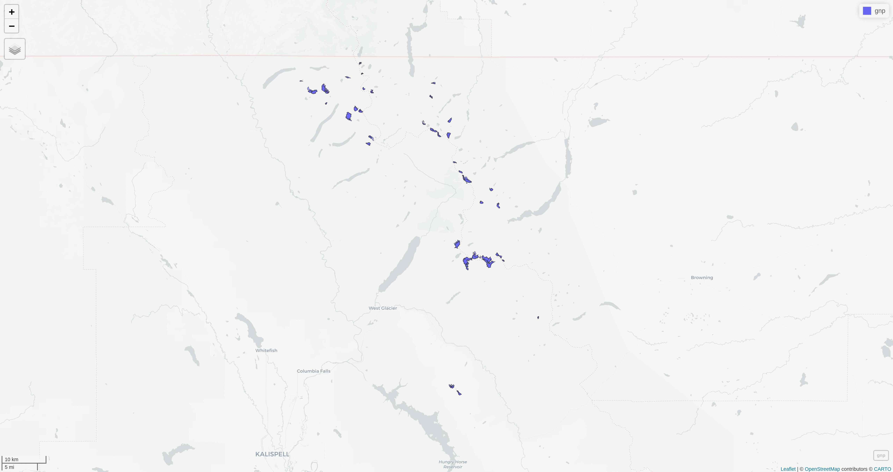
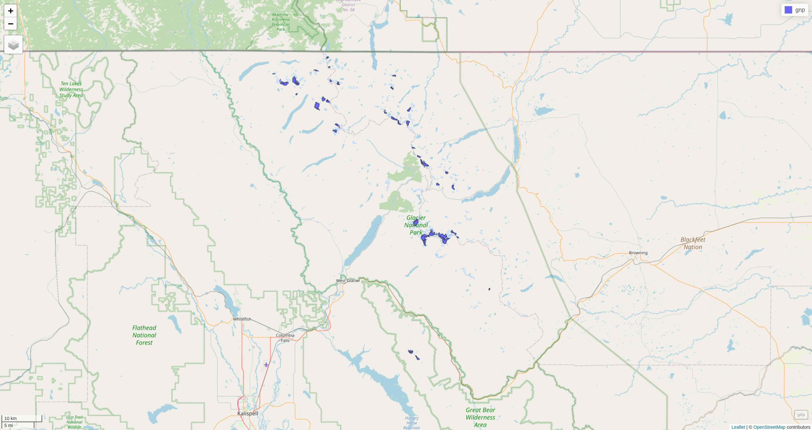
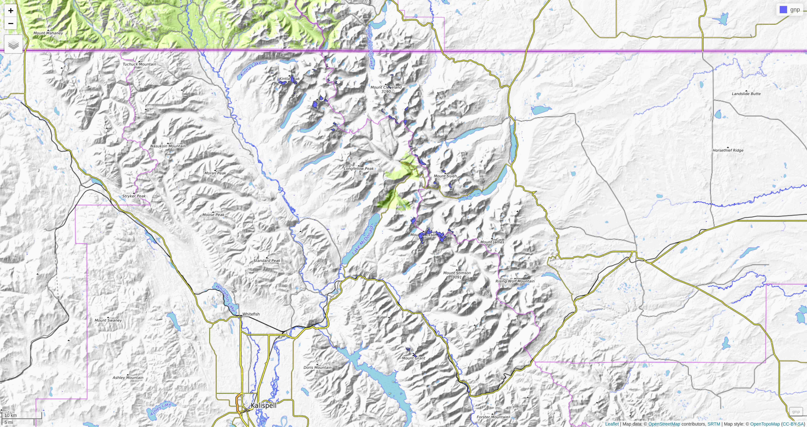
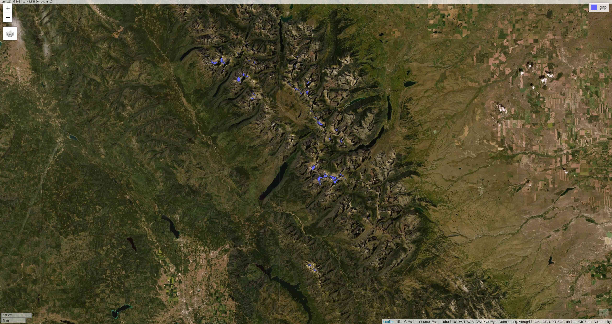
tmap
So far, we have used the plot mode of tmap. There is also a view mode which allows interactive viewing in a browser through Leaflet
Change to view mode:
tmap_mode("view")You can also toggle between modes with ttm
Re-plot the last map we plotted with tmap:
tmap_last()leaflet
leaflet creates a map widget to which you add layers
map <- leaflet()
addTiles(map)Spatial data analysis
Resources
Here are some resources on the topic to get started.
Image credits
Szűcs Róbert, Grasshopper Geography